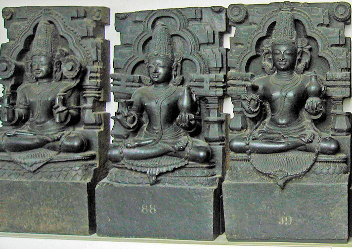
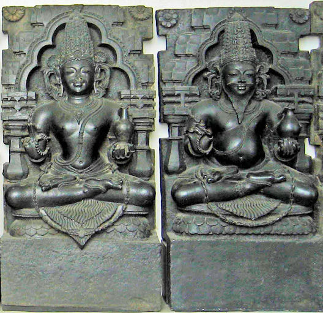
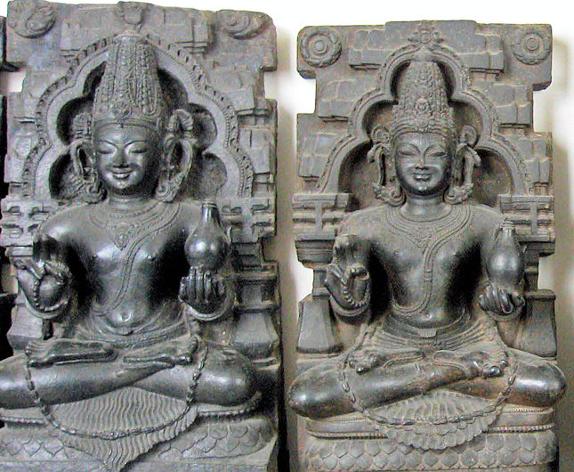
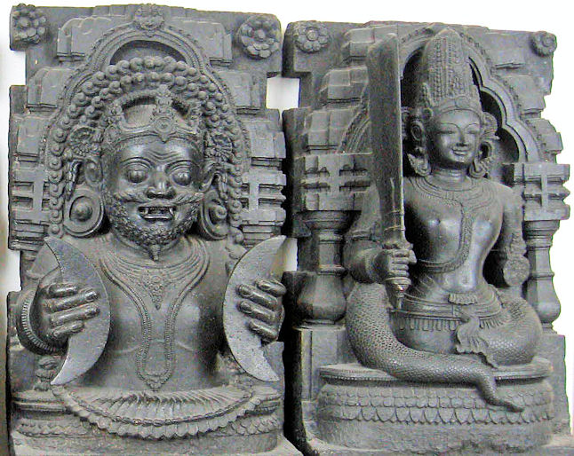

mailto:payer@payer.de
Zitierweise | cite as:
Payer, Alois <1944 - >: Sanskritkurs. -- 46. Lektion 46. -- Fassung vom 2009-01-23. -- URL: http://www.payer.de/sanskritkurs/lektion46.htm
Erstmals hier publiziert: 2009-01-09
Überarbeitungen: 2009-01-23 [Verbesserungen]
Anlass: Lehrveranstaltungen 1980 - 1984
©opyright: Dieser Text steht der Allgemeinheit zur Verfügung. Eine Verwertung in Publikationen, die über übliche Zitate hinausgeht, bedarf der ausdrücklichen Genehmigung des Verfassers
Dieser Text ist Teil der Abteilung Sanskrit von Tüpfli's Global Village Library
Falls Sie die diakritischen Zeichen nicht dargestellt bekommen, installieren Sie eine Schrift mit Diakritika wie z.B. Tahoma.
Die Devanāgarī-Zeichen sind in Unicode kodiert. Sie benötigen also eine Unicode-Devanāgarī-Schrift.
| परस्मैपदम् | आत्मनेपदम् | |||
|---|---|---|---|---|
| एकवचनम् | बहुवचनम् | एकवचनम् | बहुवचनम् | |
| Perfektendungen | -tha | -a | -se | -dhve |
Beachten Sie, dass die Endung -- meistens aber nicht die Form! -- der 2.pl.P mit der der 1. und 3.sg.P übereinstimmt.
| Vor -tha tritt bei den meisten Wurzeln auf -ṛ kein Bindevokal
|
| Die Endung -dhve muss im Perfekt durch -ḍhve ersetzt werden, wenn ein wurzelhaftes -u oder -ṛ unmittelbar vorangeht. Diese Ersetzung kann wahlweise nach dem Bindevokal -i- erfolgen, wenn diesem ein Halbvokal oder h unmittelbar vorangeht. |
Verben, die diesem Typ folgen:
|
1.sg.P = 3.sg.P = 2.pl.P |
बन्ध् 9P
परस्मैपदम् एकवचनम् बहुवचनम् बबन्धिथ
बबन्द्धबबन्ध
जीव् 1P
परस्मैपदम् आत्मनेपदम् एकवचनम् बहुवचनम् एकवचनम् बहुवचनम् जिजीविथ जिजीव <जिजीविषे> <जिजीविध्वे>
<जिजीविढ्वे>
अस् 2P, 4P
परस्मैपदम् आत्मनेपदम् एकवचनम् बहुवचनम् एकवचनम् बहुवचनम् आसिथ आस <आसिषे> <आसिध्वे>
Verben, die diesem Typ folgen:
भिद् 7U
परस्मैपदम् आत्मनेपदम् एकवचनम् बहुवचनम् एकवचनम् बहुवचनम् बिभेदिथ बिभिद बिभिदिषे बिभिदिध्वे
मुह् 4P fakultativ अनिट्
परस्मैपदम् एकवचनम् बहुवचनम् मुमोहिथ
मुमोढ
मुमोग्धमुमुह
Verben, die diesem Typ folgen:
इ 2P
परस्मैपदम् एकवचनम् बहुवचनम् इयेथ
इययिथ
iy-e + i-thaईय
i + iy-a
नी 2U
परस्मैपदम् आत्मनेपदम् एकवचनम् बहुवचनम् एकवचनम् बहुवचनम् निनयिथ
निनेथनिन्य
ninī + aनिन्यिषे निन्यिध्वे
निन्यिढ्वे
स्तु 2U (अनिट्)
परस्मैपदम् आत्मनेपदम् एकवचनम् बहुवचनम् एकवचनम् बहुवचनम् तुष्टोथ तिष्टुव तुष्टुषे तुष्टुढ्वे
कृ 8U (अनिट्)
परस्मैपदम् आत्मनेपदम् एकवचनम् बहुवचनम् एकवचनम् बहुवचनम् चकर्थ चक्र चकृषे चकृढ्वे
Verben, die diesem Typ folgen:
पॄ 3P
परस्मैपदम् एकवचनम् बहुवचनम् पपरिथ पपर
= 1.sg.P
संस्कृ 8U
परस्मैपदम् आत्मनेपदम् एकवचनम् बहुवचनम् एकवचनम् बहुवचनम् सञ्चस्करिथ सञ्चस्कर सञ्चस्करिषे सञ्चस्करिध्वे
सञ्चसक्रिढ्वे
दा 3U
परस्मैपदम् आत्मनेपदम् एकवचनम् बहुवचनम् एकवचनम् बहुवचनम् ददाथ
ददिथ
da-di-tha
oder:
da-d-i-thaदद ददिषे ददिध्वे
गै 1P
परस्मैपदम् एकवचनम् बहुवचनम् जगाथ
जगिथजग
Verben, die diesem Typ folgen:
- gam "gehen"
- han (»ghan) "erschlagen"
- jan "geboren werden"
- vac "sprechen"
- vad "sprechen"
- yaj "opfern"
- u.a.
गम् 1P
परस्मैपदम् एकवचनम् बहुवचनम् जगमिथ
जगन्थजग्म
हन् 2P
परस्मैपदम् एकवचनम् बहुवचनम् जघनित
जगन्थजघ्न
जन् 4Ā
आत्मनेपदम् एकवचनम् बहुवचनम् जज्ञिषे जज्ञिध्वे
यज् 1U
परस्मैपदम् आत्मनेपदम् एकवचनम् बहुवचनम् एकवचनम् बहुवचनम् इयजिथ
इयष्ठईज ईजिषे ईजिध्वे
वच् 1P
परस्मैपदम् एकवचनम् बहुवचनम् उवचिथ
उवक्थऊच
वह् 1U
परस्मैपदम् आत्मनेपदम् एकवचनम् बहुवचनम् एकवचनम् बहुवचनम् उवहिथ
उवोढऊह ऊहिषे ऊहिध्वे
ऊहिढ्वे
वद् 1P
परस्मैपदम् एकवचनम् बहुवचनम् उवदिथ ऊद
स्वप् 2P
परस्मैपदम् एकवचनम् बहुवचनम् सुष्वपिथ
सुष्वप्थसुषुप
aus: su + *svp + a
|
Die 2.sg.P. wird vom schwachen Stamm gebildet, wenn der Bindevokal -i- antritt. |
पच् 1U
परस्मैपदम् आत्मनेपदम् एकवचनम् बहुवचनम् एकवचनम् बहुवचनम् पपक्थ
पेचिथपेच पेचिषे पेचिध्वे
Verben, die diesem Typ folgen:
क्रम् 1U
परस्मैपदम् आत्मनेपदम् एकवचनम् बहुवचनम् एकवचनम् बहुवचनम् चक्रमिथ चक्रम चक्रमिषे चक्रमिध्वे
विद् 2P präsentisches Perfekt
परस्मैपदम् एकवचनम् बहुवचनम् वेत्थ विद
अह्
परस्मैपदम् एकवचनम् बहुवचनम् आत्थ ---
भू 1P
परस्मैपदम् एकवचनम् बहुवचनम् बभूविथ बभूव
= 1.3.sg.P
जि 1P
परस्मैपदम् एकवचनम् बहुवचनम् जिगेथ
जिगयिथजिग्य
Das periphrastische Perfekt wird gebildet von:
बन्ध् Kausativ
परस्मैपदम् आत्मनेपदम् एकवचनम् बहुवचनम् एकवचनम् बहुवचनम् बन्धयां चकर्थ
बन्धयामासिथ
बन्धयां बभूविथबन्धयां चक्र
बन्धयामास
बन्धयां बभूवबन्धयां चकृषे
बन्धयामासिथ
बन्धयां बभूविथबन्धयां चकृढ्वे
बन्धयामास
बन्धयां बभूव
सम 3: gleich, eben, ähnlich
davon:
समम् Adv.: in gleicher Weise, zugleich (तृतीयया), gleichmäßig
समता f.: Gleichmut
विषम 3: ungleich, uneben, böse
ग्रह् 9U गृह्णाति (gṛh-ṇā-ti) : ergreifen, packen, fassen
Perf Va (!) जग्राह, जगृहुर्
Fut. ग्रहीष्यति
Pass. गृह्यते
Kaus.ग्राहयति
PPP गृहीत
Inf. ग्रहितुम्
Absol. -ग्राह्यdavon:
ग्रह m.: Greifen, Greifer, Krokodil, Wandelstern
नवग्रह m.: die neun Wandelsterne (nicht Planeten!) (s. Basham, Wonder S. 493):
- सूर्यः = Sonne
- चन्द्रः = Mond
- मङ्गलः = Mars
- बुधः = Merkur
- बृहस्पतिः = Jupiter
- शुक्रः = Venus
- शनिः = Saturn
- राहुः
- केतुः
Zu राहु und केतु siehe:
Payer, Alois <1944 - >: Dharmashastra : Einführung und Überblick. -- 10. Sakramente und Übergangsriten (samskara). -- Anhang C: Rahu und Ketu, die unsichtbaren Wandelsterne . -- URL: http://www.payer.de/dharmashastra/dharmash10c.htm
 
सूर्यः = Sonne, चन्द्रः = Mond, मङ्गलः = Mars
बुधः = Merkur, बृहस्पतिः = Jupiter
 
शुक्रः = Venus, शनिः = Saturn
राहुः, केतुः
[Bildquelle der नवग्रह : Redtigerxyz / Wikipedia. GNU
FDLicense]
तुष् 4P तुष्यति : sich zufrieden geben, zufrieden sein mit (षष्ठ्या, चतुर्थ्या, तृतियया, सप्तम्या)
Perf. II तुतोष, तुतुषुर्
Fut. तोक्ष्यति
Pass. तुष्यते
Kaus. तोषयति
PPP तुष्ट
Inf. तोष्टुम्
नम् 1P नमति : sich beugen, sich verbeugen, sich neigen, sich verneigen
Perf. Vb ननाम, नेमुर्
Fut. नंस्यति
Pass. नम्यते
Kaus. नमयति । नामयति
PPP नत
Inf. नन्तुम्
Abb.: नारायण तुभ्यं नमामि
नारायनो ऽनन्तशयी,
ca. 1870 (अनन्त = शेष = oberster Schlangenkönig)
[Bildquelle: Wikipedia. Public domain]
रुह् 1P रोहति : ersteigen, besteigen
Perf. II रुरोह, रुरुहे
Fut. रोक्ष्यति
Pass. रुह्यते
Kaus. रोहयति । रोपयति
PPP. रूढ
Inf. रोढुम्
Abb.: अश्वरोहकः (अश्व m. "Pferd")
Pune =
पुणे
[Bildquelle: wili_hybrid. --
http://www.flickr.com/photos/wili/294411828/. -- Zugriff am 2009-01-08. --
Creative Commons
Lizenz (Namensnennung)]
ह्वे । हू 1U ह्वयति : rufen, herbeirufen
Perf. IIIa जुहाव, जुहुवे
Fut. ह्वास्यति
Pass. हूयते
Kaus. ह्वाययति
PPP हूत
Inf. ह्वातुम्
Absol. -हूय
Abb.: महामात्र कं चरिष्णुदूरशब्देनाह्वयसि1
उदयपुर
[Bildquelle: Travel Aficionado. --
http://www.flickr.com/photos/travel_aficionado/2200003879/. -- Zugriff am
2009-01-08. --
Creative Commons Lizenz (Namensnennung, keine kommerzielle Nutzung)]
1 महामात्र m. "Mahout"; चरिष्णु 3 "beweglich", दूरशब्द m. "Ferngespräch, Fernsprecher" » चरिष्णुदूरशब्द "Mobiltelefon" (Wortbildung: A. Payer)
विभ्रम m.: das Hin- und Hergehen
भ्रंश m.: das Entfallen
श्रम् 4P श्राम्यति : sich abmühen, müde werden
Perf. Vc शश्राम, शश्रामुर्
Fut. श्रमिष्यति
Pass. श्रम्यते
Kaus. श्रमयति । श्रामयति
PPP श्रान्त
Inf. श्रमितुम्
Absol. श्रमित्वा । श्रान्त्वाdavon:
आश्रम m.n.
Abb.: श्रान्तः
Karnataka = ಕರ್ನಾಟಕ
[Bildquelle: mattlogelin. --
http://www.flickr.com/photos/mattlogelin/188588421/. -- Zugriff am
2009-01-09. --
Creative Commons Lizenz (Namensnennung, keine kommerzielle Nutzung)]
श्रि 1U श्रयति : lehnen, sich anlehnen, Halt finden, sich zu jemandem begeben (द्वितीयया, सप्तम्या)
Perf. IIIa शिश्राय, शिश्रिये
Fut. श्रयिष्यति
Pass. श्रीयते
Kaus. श्राययति
PPP श्रित
Inf. श्रयितुम्
सञ्ज् 1P सजति : anhängen, sich heften an (सप्तम्या)
Perf. I ससञ्ज, ससञ्जुर्
Fut. संक्ष्यति
Pass. सज्यते
Kaus. सञ्जयति
PPP सक्त
Inf. संक्तुम्davon:
सङ्ग m.: das Anhängen an, Berührung mit (तृतीयया)
Abb.: सङ्गः
Kamareddy = కామారెడ్డి
[Bildquelle: Sumanth K. Garakarajula. --
http://www.flickr.com/photos/photocracy1/2864457448/. -- Zugriff am
2009-01-09. --
Creative Commons Lizenz (Namensnennung, keine kommerzielle Nutzung)]
द्रु 1P द्रवति : laufen, eilen
Perf IIIa (अनिट्) दुद्राव, दुद्रुवुर्
Fut. द्रोष्यति
Pass. द्रूयते
Kaus. द्रावयति
PPP द्रुत
Inf. द्रोतुम्
Absol. -द्रुत्य
भ्रम् 1P भ्रमति । 4P भ्राम्यति : umherirren, umherstreifen
Perf. Vc बभ्राम, बभ्रमुर् । Vb भ्रेमुर्
Fut. भ्रमिष्यति
Kaus. भ्रमयति
PPP भ्रान्त
Inf. भ्रमितुम्
Absol. -भ्रम्यdavon:
विभ्रम m.: Umherirren, Verwirrung, Irrtum
लम्ब् 1Ā लम्बते : herabhängen von (सप्तम्या), hängen an (सप्तम्या)
Perf. I ललम्बे
Fut. लम्बिष्यते
Pass. लम्ब्यते
Kaus. लम्बयति
PPP लम्बित
Inf. लम्बितुम्
Absol. -लम्ब्य
Abb.: लम्बोदर नमस्तुभ्यम्
उदरं लम्बते यस्य स लम्बोदरः (उदर n. "Bauch")
गणेशचतुर्थी, Bangalore = ಬೆಂಗಳೂರು
[Bildquelle: mattlogelin. --
http://www.flickr.com/photos/mattlogelin/1397759461/. -- Zugriff am
2009-01-08. --
Creative Commons Lizenz (Namensnennung, keine kommerzielle Nutzung)]
लम्ब् + आ 1Ā आलम्बते : sich hängen an (द्वितीयया)
यदि Konjunktion: wenn
भू + परि 1P परिभवति : einkreisen, bemeistern, besiegen
PPP परिभूत 3: besiegt, gedemütigt, erniedrigt
नि Präverb: niederwärts, hinunter, hinein, rückwärts
z.B.
सद् + नि 1P निषीदति : sich niedersetzen
भोस् Vokativpartikel: Ausruf der Anrede, z.B.: he, heda, oh, ei, hallo, hi! oft nicht zu übersetzen. Dieser Partikel hat einen Spezialsandhi: vor allen stimmhaften Lauten, lautet er भो.
Abb.: भोः
Kutch = कच्छ
[Bildquelle: orange tuesday. --
http://www.flickr.com/photos/63138333@N00/2162104243/. -- Zugriff am
2009-01-09. --
Creative Commons Lizenz (Namensnennung, keine kommerzielle Nutzung)]
A) Bestimmen und übersetzen Sie folgende Formen:
B) Übersetzen Sie:
प्रजहाति यदा कामानात्मन्येवात्मना तुष्टः स्थितप्रज्ञस्तदोच्यते ॥१॥
क्रोधाद्भवति संमोहः
संमोहात्स्मृतिविभ्रमः ।
स्मृतिभ्रंशाद्बुद्धिनाशो
बुद्धिनाशात्प्रनश्यति ॥२॥
नास्ति बुद्धिरयुक्तस्य ॥३॥
Abb.: क्रोधाद्भवति संमोहः
संमोहात्स्मृतिविभ्रमः ।
स्मृतिभ्रंशाद्बुद्धिनाशो
बुद्धिनाशात्प्रनश्यति ॥
Mumbai = मुंबई nach
dem Attentat, 11. Juli 2006
[Bildquelle: Sun Pictures / Lakshman. --
http://www.flickr.com/photos/lakshmananand/383843516/. -- Zugriff am
2009-01-09. --
Creative
Commons Lizenz (Namensnennung, keine kommerzielle Nutzung, share alike)]
Zu Lektion 47